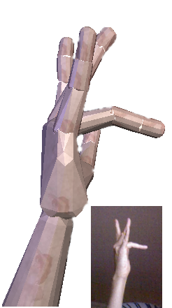
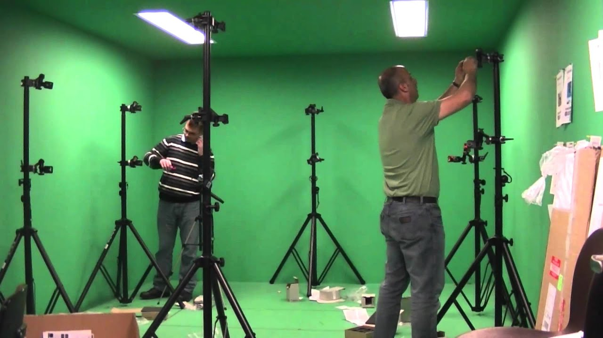
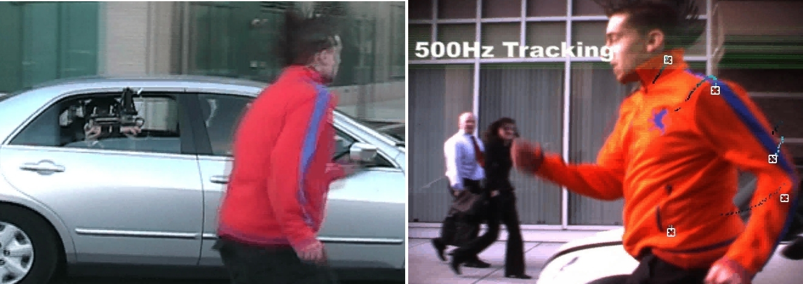
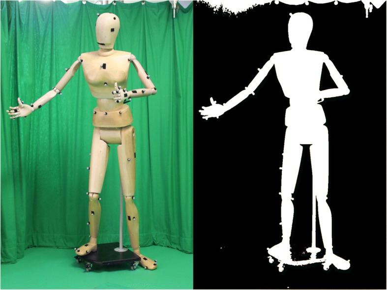
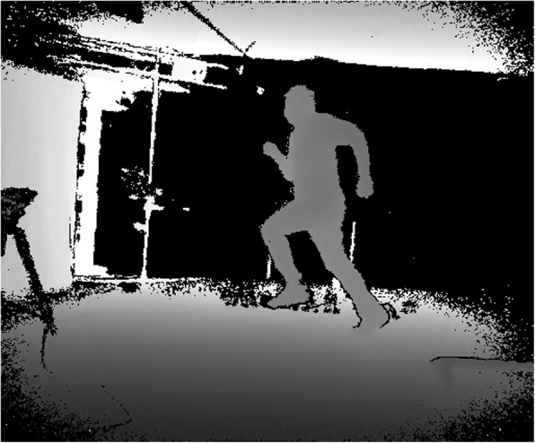
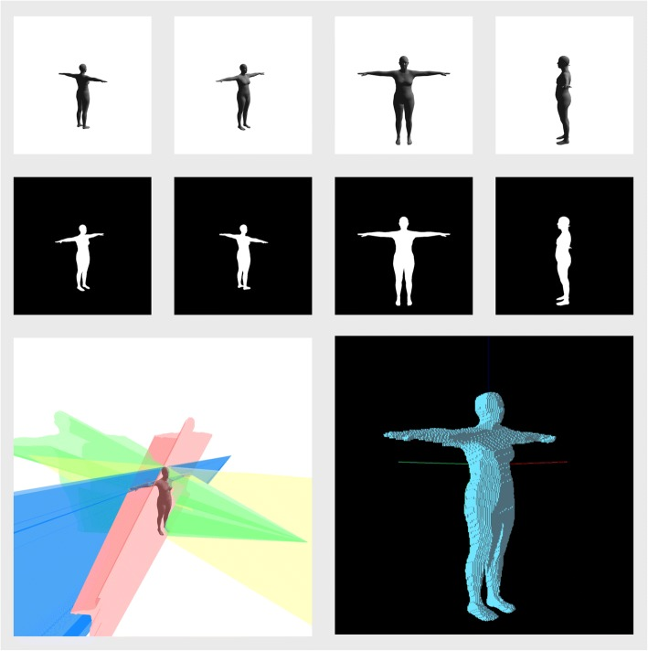

| Image | Source |
|---|---|
|  | https://media.arxiv-vanity.com/render-output/1291698/images/ringbent.png |
|  | https://www.youtube.com/watch?v=ssSa18IpvdM |
|  | https://upload.wikimedia.org/wikipedia/en/e/ec/PrakashOutdoorMotionCapture.jpg |
 | https://en.wikipedia.org/wiki/Kalman_filter#/media/File:Basic_concept_of_Kalman_filtering.svg |
|  | https://www.ncbi.nlm.nih.gov/pmc/articles/PMC5986692/ |
|  | https://www.ncbi.nlm.nih.gov/pmc/articles/PMC5986692/ |
|  | https://www.ncbi.nlm.nih.gov/pmc/articles/PMC5986692/ |